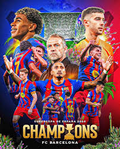
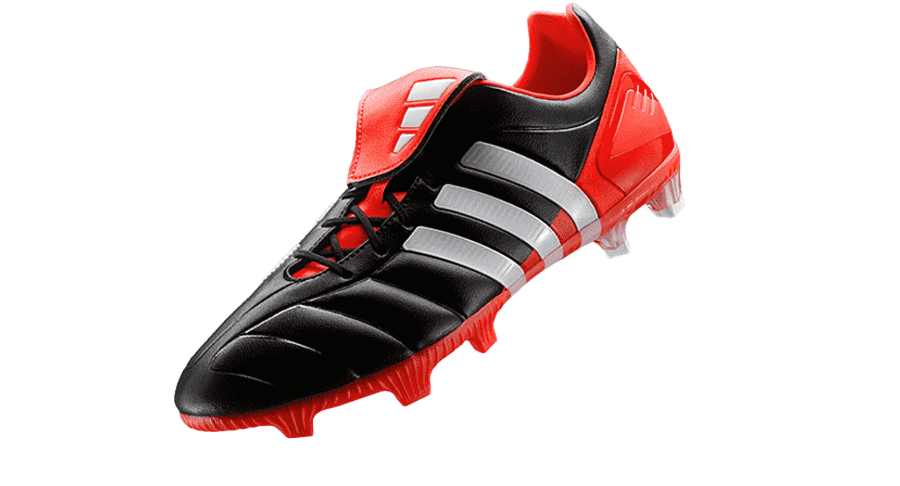
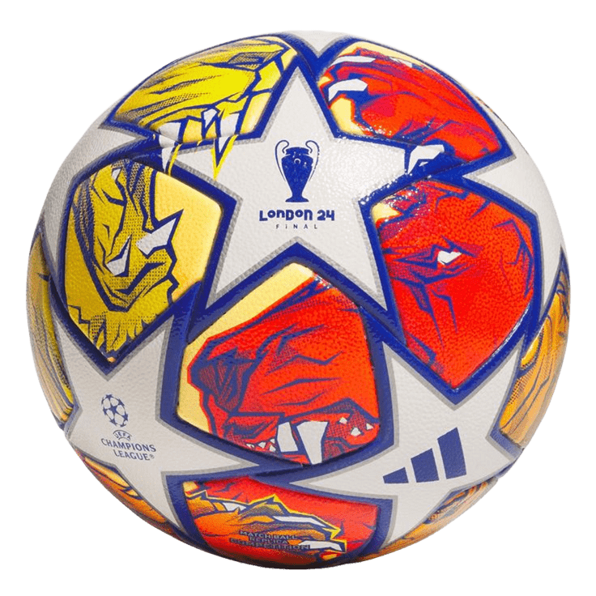

El fútbol me empezó a llamar la atención desde que era muy pequeño, ya que mi abuelito materno siempre miraba partidos y casi siempre me invitaba a verlos juntos.
Conforme fui creciendo, lo empecé a practicar en el colegio y en una academia de fútbol, en la cual logré una medalla muy importante para mí, ya que fue un reconocimiento por ser el portero menos vencido.
El fútbol me gusta porque es un deporte en el cual puedo despejar la mente, mantenerme activo físicamente y convivir con más personas que comparten la misma pasión por este deporte.
También me gusta el fútbol porque enseña que no todo se consigue a la primera. En este deporte se aprende que a veces se gana y otras veces se pierde, y que ambas experiencias son importantes para crecer.


El fútbol es una actividad a la que le dedico una parte importante de mi tiempo libre, ya que no solo me ayuda a mantenerme activo, sino que también me permite despejar la mente y salir de la rutina diaria.
Generalmente practico este deporte los fines de semana, cuando tengo más tiempo libre. En esos días suelo reunirme con amigos en las canchas de mi colonia para jugar.
Además de jugar, también dedico tiempo a ver partidos por televisión. El fútbol no es solo un pasatiempo para mí, sino una forma de mantener el equilibrio entre el ejercicio y la diversión.
